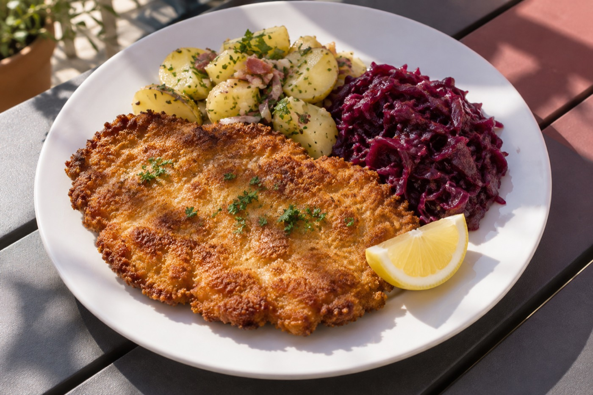

Big John's legacy, carried forward by his family
Tip Top Meats began with Joachim “Big John” Haedrich, a German master butcher who left East Germany in 1949, earned his Master Craftsman's Certificate in 1953 and came to California in 1958 to work as a sausage master. He opened Tip Top Meats in 1967 and later made Carlsbad its permanent home.
Big John passed away in January 2023 at 94. When the lease ran out in September 2024 the family paused the business, promising to keep the name, the brand and every recipe. On February 25, 2026, Tip Top Meats reopened in the same white-stucco building on Paseo Del Norte, owned today by Big John's wife Diane, his daughter Jen Haines and grandchildren Amanda, Megan and Matthew.
The shop now runs as a butcher counter, European deli and takeout kitchen with patio tables while the family works to expand back into the rest of the building. As Jen puts it: “The best part is being in the building that Big John built. It has his DNA in it.”
| Founded | 1967 |
| Founder | Joachim “Big John” Haedrich |
| Owners | The Haedrich family |
| Reopened | February 25, 2026 |
| Google rating | 4.6 stars, 2,900+ reviews |
| @tiptopcarlsbad_, 5,400+ followers |

- 1949Big John leaves East Germany
- 1953Master Craftsman's Certificate
- 1958Arrives in California as a sausage master
- 1967Opens Tip Top Meats
- Jan 2023Big John passes away at 94
- Sep 2024Lease ends; the family pauses the business
- Feb 25, 2026Reopens in the same building on Paseo Del Norte